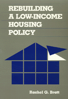

<body bgcolor="#FFFFFF" text="#000000" link="#0000FF" vlink="#CC0000" alink="#CC0000"><center><hr width="350" size="1" align="center" noshade>A new strategy proposed for producing affordable housing for low-income people through non-profit community-based organizations<hr width="350" size="1" align="center" noshade><p><a href="https://cdcshoppingcart.uchicago.edu/Cart/ChicagoBook.aspx?ISBN=9780877225959&&PRESS=temple" target="_top">Buy this book!</a> | <a href="https://cdcshoppingcart.uchicago.edu/Cart/Cart.aspx?PRESS=temple" target="_top">View Cart</a> | <a href="https://cdcshoppingcart.uchicago.edu/Cart/Cart.aspx?PRESS=temple" target="_top">Check Out</a></p><p></p></center><!--none//--><h1>Rebuilding a Low-Income Housing Policy</h1>
<h3>Rachel G. Bratt</h3>
<P>cloth 0-87722-595-8 $68.50, May 89, <FONT COLOR=#990033>Out of Stock Unavailable</FONT>
<br>paper 1-56639-263-2 $35.95, Jul 94, <FONT COLOR=#990033>Temporarily Unavailable</FONT>
<BR> 368 pp
</P><BLOCKQUOTE><I>"A useful resource for planners an activist working on housing development. It provides a wealth of information about the positive and negative outcomes of various federal and local initiatives."</I>
<br>&#151<b><I>International Journal of Urban and Regional Research</I></b><I></I></BLOCKQUOTE>
<p>Examining earlier federal housing initiatives, Rachel Bratt argues that public housing has not failed. She proposes a new strategy for producing decent, affordable housing for low-income people through non-profit community-based organizations.
<p>The potential of a new housing policy built on empowering community groups and low-income households is compelling. The production, rehabilitation, management and/or ownership by community-based organizations, with funding and technical assistance provided by a new type of public support system, not only would offer participants much-needed shelter, but also control over and security in their living environments. These qualities have been lacking in housing sponsored by the private for-profit sector as well as in previous subsidy programs.
<p>The author analyzes the limitations of both profit-oriented developers and public agencies as the primary vehicles for developing low- and middle-income housing. Promoting small-scale neighborhood organizations as better suited for delivering such services, she focuses on large multi-family projects and argues that our urban public housing stock represents an irreplaceable resource that is rapidly decaying to a point of no return. Through a number of case studies of housing projects throughout Massachusetts&#151among them South Holyoke, the Granite Properties, Fields Corner in Dorchester, and the Boston Housing Partnership&#151Bratt examines the dilemmas faced by community development corporations, analyzes the accomplishments of empowered community groups, and recommends ways of <I>Rebuilding a Low-Income Housing Policy</I>.
<BR>&nbsp;<h2>Reviews</h2>
<p><I>"[L]ittle work has been done to show that a community-based housing program is a viable alternative. Rachel Bratt's new book...fills this void nicely by giving a detailed account of the recent emergence of community-based housing programs....Bratt is perhaps the country's leading expert in this area....While the main emphasis of the book is on community-based housing programs, an additional plus is a critical review of the history of United States housing programs which I found illuminating and insightful."</I>
<br>&#151<b><I>Journal of Urban Affairs</I></b>
<BR>&nbsp;<h2>Contents</h2><P>
<p>Preface
<br>Acknowledgments
<p><b>Part I: Introduction</b>
<br>1. Housing Problems and Current Responses
<br>2. Housing Programs and Housing Evaluations
<p><b>Part II: Traditional Federally Subsidized Multifamily Housing Programs</b>
<br>3. The Public Housing Program
<br>4. Publicly Subsidized Private Housing
<br>5. CASE STUDY: Private versus Public Goals: Conflicting Interests in Resyndication
<br>6. HUD and Low-Income Housing Programs
<br>7. CASE STUDY: HUD's Property Disposition Policies and the Granite Properties &#150 Emily J. Morris, co-author
<p><b>Part III: The Past, Present, and Future of Community-Based Housing</b>
<br>8. An Overview and Assessment of the Community-Based Housing Strategy
<br>9. CASE STUDY: Community-Based Housing Development at the Local Level: The Challenges Facing South Holyoke, Massachusetts &#150 Thomas M. Harden, co-author
<br>10. Dilemmas of Community-Based Housing Development CASE STUDIES: Two Community Development Corporations &#150 Eric Bove, Phillip Brown, Peter Hollands, Sarah Snow, and John Thoma, case studies co-authors
<br>11. Public Support for Community-Based Housing in Massachusetts
<br>12. CASE STUDY: Institutionalizing Community-Based Housing Development: The Boston Housing Partnership &#150 Wendy Plotkin, co-author
<br>13. Rebuilding a Low-Income Housing Policy
<p>Notes
<br>References
<br>Index
</P><BR>&nbsp;<H2>About the Author(s)</H2>
<table><tr><td valign="top"><img src="/tempress/authors/493_au.gif" height="90" width="75"></td><td width="100%" valign="middle"><p><b>Rachel G. Bratt</b> is Associate Professor, Department of Urban and Environmental Policy, at Tufts University. She is co-editor of <I><A HREF="1301_reg.html" TARGET="_top">A Right to Housing: Foundation for a New Social Agenda</A></I> (with Michael E. Stone and Chester Hartman) and <I><A HREF="383_reg.html" TARGET="_top">Critical Perspectives on Housing </A></I> (with Chester Hartman and Ann Meyerson), both published by Temple.</P></td></tr></table>
<BR><H2>Subject Categories</H2>
<p><A HREF="/tempress/urban.html" TARGET="_top">Urban Studies</a>
</p>
<p align="center"><a href="https://cdcshoppingcart.uchicago.edu/Cart/ChicagoBook.aspx?ISBN=9780877225959&&PRESS=temple" target="_top">Buy this book!</a> | <a href="https://cdcshoppingcart.uchicago.edu/Cart/Cart.aspx?PRESS=temple" target="_top">View Cart</a> | <a href="https://cdcshoppingcart.uchicago.edu/Cart/Cart.aspx?PRESS=temple" target="_top">Check Out</a></p><p><font face="Arial" size="1"><a href="copyright.html" onMouseOver="window.status='Web Copyright Policy';return true;" onMouseOut="window.status=''" title="Web Copyright Policy">&copy;</a> 2015 <a href="http://www.temple.edu" target="new" onMouseOver="window.status='Link to Temple University home page';return true;" onMouseOut="window.status=''" title="Link to Temple University home page">Temple University</a>. All Rights Reserved. http://www.temple.edu/tempress/titles/493_reg.html</font></p>